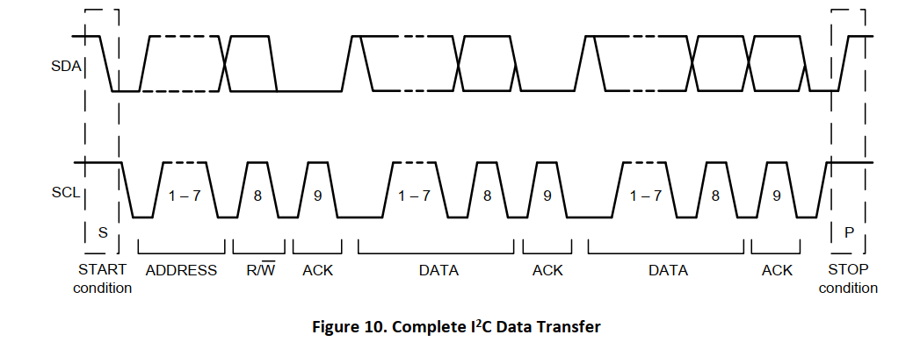
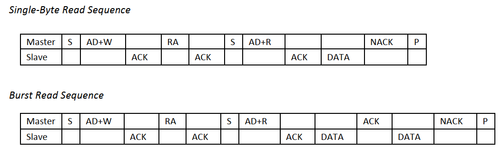
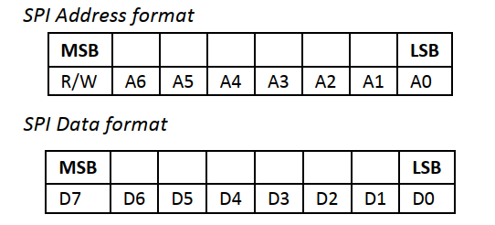
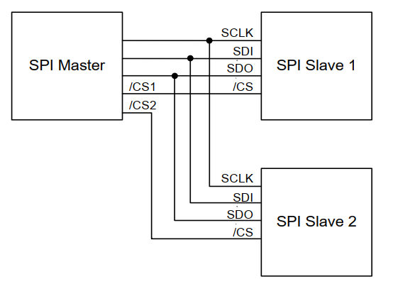

ICM20948
1.1 概述¶
ICM-20948是一个多芯片模块(MCM)，由两个芯片集成到一个单QFN封装中。其中一个芯片包含一个三轴陀螺仪、三轴加速度计和一个数字运动处理器。™(DMP)。另一个芯片封装了来自旭化成微器件公司的AK09916(3轴磁力计)。
1.2 ICM20948框图¶

1.3 I2C接口¶
1.3.1 从机地址¶
ICM-20948 的从机地址为 1101 00X 的 7 Bit长度，其中AD0引脚可以控制 “X” 位，若AD0为低电平则从机地址为 1101 000，而当AD0为高电平时则从机地址为 1101 001。
1.3.1 I2C时序¶
起始条件以后：
- 主机发送 7 Bit的从机地址（ 1101000 ），第 8 Bit为读写位。然后，主机释放SDA并等待从机设备的应答位。
- 每一个字节传输完，必须跟随一个应答位。
- 从机设备在SCL高电平期间，拉低SDA并保持SDA为Low，表示应答。
- 数据传输必须由主机发送结束条件终止。

1.3.2 写ICM20948寄存器¶
- 主机发送起始条件，紧跟着 7 Bit ICM20948地址和写位(0)。
- 从机设备ICM20948 发送应答位。
- 主机发送寄存器地址。
- 从机设备ICM20948 发送应答位。
- 主机发送需要写入的数据。
- 从机设备ICM20948 发送应答位。
- 主机发送结束条件，一个字节数据传输终止。

1.3.3 读ICM20948寄存器¶
- 主机发送起始条件，紧跟着 7 Bit ICM20948地址和写位(0)。
- 从机设备ICM20948 发送应答位。
- 主机发送寄存器地址。
- 从机设备ICM20948 发送应答位。
- 主机再次发送起始条件，紧跟着7 Bit ICM20948地址和读位(1)。
- 从机设备ICM20948 发送应答位，并返回寄存器数据。
- 通信以无应答和主机发送结束条件终止。

1.4 SPI接口¶
- 数据高位先行，即MSB 首先，LSB 最后。
- 数据被锁定在 SCLK 的上升沿。
- 数据应在 SCLK 的下降沿上转换。
- SCLK的最大频率为7 MHz。
- 第一个字节包含SPI地址，后面的字节包含SPI数据。第一个字节的第一个位包含读写位，表示读取(1)或写入(0)操作。后面的7位包含寄存器地址。


1.5 I2C接口驱动¶
1.5.1 软件模拟I2C通信¶
源码和软件模拟原理在我的个人网站：软件模拟I2C
模拟的GPIO口自定义，不过多赘述。
1.5.2 测试模拟I2C¶
核心测试程序，放在初始化之后就行，原理就是ICM20948 芯片是否有应答：
- 输入正确的地址应该有应答返回 ack=0
- 输入错误的地址应该无应答返回 ack=1 (一定要测试无应答这部分)
C
uint8_t ack;
I2C_Start();
I2C_WriteByte(0xD0);
ack = I2C_ReceiveAck();
I2C_Stop();
OLED_ShowNum(0, 0, ack, 1, 16);
1.5.3 完整驱动¶
其实是该部分并不完整，想要模拟I2C可以看SPI部分，完善缺失的部分。
icm20948.c
C
#include "icm20948.h"
#include "oled.h"
#define I2C
#ifdef I2C
static void ICM20948_WriteByte(uint8_t SlaveAddress, uint8_t RegisterAddress, uint8_t RegisterData) {
I2C_Start();
I2C_WriteByte(SlaveAddress|0x00);
I2C_ReceiveAck();
I2C_WriteByte(RegisterAddress);
I2C_ReceiveAck();
I2C_WriteByte(RegisterData);
I2C_ReceiveAck();
I2C_Stop();
}
static uint8_t ICM20948_ReadByte(uint8_t SlaveAddress, uint8_t RegisterAddress) {
uint8_t RegisterData;
I2C_Start();
I2C_WriteByte(SlaveAddress|0x00);
I2C_ReceiveAck();
I2C_WriteByte(RegisterAddress);
I2C_ReceiveAck();
I2C_Start();
I2C_WriteByte(SlaveAddress|0x01);
I2C_ReceiveAck();
RegisterData = I2C_ReadByte();
I2C_WriteAcK(1);
I2C_Stop();
return RegisterData;
}
#endif
/* 切换寄存器BANK */
static void ICM20948_SelectBank(uint8_t BankX) {
switch (BankX) {
case 0:
/* 0000 0000 */
ICM20948_WriteByte(ICM20948_ADDRESS, ICM20948_REG_BANK_SEL, 0x00);
break;
case 1:
/* 0001 0000 */
ICM20948_WriteByte(ICM20948_ADDRESS, ICM20948_REG_BANK_SEL, 0x10);
break;
case 2:
/* 0010 0000 */
ICM20948_WriteByte(ICM20948_ADDRESS, ICM20948_REG_BANK_SEL, 0x20);
break;
case 3:
/* 0011 0000 */
ICM20948_WriteByte(ICM20948_ADDRESS, ICM20948_REG_BANK_SEL, 0x30);
break;
default:
ICM20948_WriteByte(ICM20948_ADDRESS, ICM20948_REG_BANK_SEL, 0x00);
}
}
/* ICM20948初始化 */
void ICM20948_Init(void) {
/* BANK 0 */
/* 选择bank0 */
ICM20948_SelectBank(0);
/* 复位寄存器,取消睡眠模式 */
ICM20948_WriteByte(ICM20948_ADDRESS, ICM20948_PWR_MGMT_1, 0x80);
vTaskDelay(100);
/* 自动选择合适的时钟源 */
ICM20948_WriteByte(ICM20948_ADDRESS, ICM20948_PWR_MGMT_1, 0x01);
/* 开启陀螺仪和加速度计的所有轴 */
ICM20948_WriteByte(ICM20948_ADDRESS, ICM20948_PWR_MGMT_2, 0x00);
/* BANK 1 NONE */
/* BANK 2 */
/* 选择bank2 */
ICM20948_SelectBank(2);
/* 配置陀螺仪采样频率 1.1kHZ/(0x04+1) = 220HZ */
ICM20948_WriteByte(ICM20948_ADDRESS, ICM20948_GYRO_SMPLRT_DIV, 0x04);
/* 陀螺仪Config,使用DLPF(低通滤波),DLPFCFG=3,设置量程为 ±2000dps */
ICM20948_WriteByte(ICM20948_ADDRESS, ICM20948_GYRO_CONFIG_1, 0x1F);
ICM20948_WriteByte(ICM20948_ADDRESS, ICM20948_GYRO_CONFIG_2, 0x00);
/* 配置加速度计采样频率 1.125kHZ/(0x000A+1) = 102HZ */
ICM20948_WriteByte(ICM20948_ADDRESS, ICM20948_ACCEL_SMPLRT_DIV_1, 0x00);
ICM20948_WriteByte(ICM20948_ADDRESS, ICM20948_ACCEL_SMPLRT_DIV_2, 0x0A);
/* 加速度计Config,使用DLPF(低通滤波),DLPFCFG=3,设置量程为 ±8g */
ICM20948_WriteByte(ICM20948_ADDRESS, ICM20948_ACCEL_CONFIG, 0x1D);
ICM20948_WriteByte(ICM20948_ADDRESS, ICM20948_ACCEL_CONFIG_2, 0x00);
/* BANK 3 NONE */
}
/* IMU单元应答测试 */
void ICM20948_AckTest(void) {
uint8_t ack;
I2C_Start();
I2C_WriteByte(0xD0);
ack = I2C_ReceiveAck();
I2C_Stop();
OLED_ShowNum(0, 0, ack, 1, 16);
}
uint8_t ICM20948_ReadDeviceID(void) {
ICM20948_SelectBank(0);
return ICM20948_ReadByte(ICM20948_ADDRESS, ICM20948_WHO_AM_I);
}
void ICM20948_Address_Change(void) {
HAL_GPIO_WritePin(IMU_AD0_GPIO_Port, IMU_AD0_Pin, GPIO_PIN_SET);
}
/* 读取加速度计、陀螺仪数据 */
void ICM20948_ReadData(ImuData* data) {
/* 加速度真实值: 寄存器值/4095 ; 4095 = 65535/16 = 16位ADC/量程
* 角速度真实值: 寄存器值/16.4 ; 16.4 = 65535/4000 = 16位ADC/量程
* */
ICM20948_SelectBank(0);
uint8_t accX_H = ICM20948_ReadByte(ICM20948_ADDRESS, ICM20948_ACCEL_XOUT_H);
uint8_t accX_L = ICM20948_ReadByte(ICM20948_ADDRESS, ICM20948_ACCEL_XOUT_L);
data->AccX = ((accX_H << 8) | accX_L);
uint8_t accY_H = ICM20948_ReadByte(ICM20948_ADDRESS, ICM20948_ACCEL_YOUT_H);
uint8_t accY_L = ICM20948_ReadByte(ICM20948_ADDRESS, ICM20948_ACCEL_YOUT_L);
data->AccY = ((accY_H << 8) | accY_L);
uint8_t accZ_H = ICM20948_ReadByte(ICM20948_ADDRESS, ICM20948_ACCEL_ZOUT_H);
uint8_t accZ_L = ICM20948_ReadByte(ICM20948_ADDRESS, ICM20948_ACCEL_ZOUT_L);
data->AccZ = ((accZ_H << 8) | accZ_L);
uint8_t GyroX_H = ICM20948_ReadByte(ICM20948_ADDRESS, ICM20948_GYRO_XOUT_H);
uint8_t GyroX_L = ICM20948_ReadByte(ICM20948_ADDRESS, ICM20948_GYRO_XOUT_L);
data->GyroX = ((GyroX_H << 8) | GyroX_L);
uint8_t GyroY_H = ICM20948_ReadByte(ICM20948_ADDRESS, ICM20948_GYRO_YOUT_H);
uint8_t GyroY_L = ICM20948_ReadByte(ICM20948_ADDRESS, ICM20948_GYRO_YOUT_L);
data->GyroY = ((GyroY_H << 8) | GyroY_L);
uint8_t GyroZ_H = ICM20948_ReadByte(ICM20948_ADDRESS, ICM20948_GYRO_ZOUT_H);
uint8_t GyroZ_L = ICM20948_ReadByte(ICM20948_ADDRESS, ICM20948_GYRO_ZOUT_L);
data->GyroZ = ((GyroZ_H << 8) | GyroZ_L);
}
icm20948.h
C
#ifndef __ICM20948_H
#define __ICM20948_H
#include "sw_iic.h"
#include "icm10948_reg.h"
typedef struct {
int16_t AccX;
int16_t AccY;
int16_t AccZ;
int16_t GyroX;
int16_t GyroY;
int16_t GyroZ;
} ImuData;
void ICM20948_Init(void);
void AK09916_Init(void);
uint8_t ICM20948_ReadDeviceID(void);
uint8_t AK09916_ReadDeviceID(void);
void ICM20948_Address_Change(void);
void ICM20948_ReadData(ImuData* data);
void ICM20948_AckTest(void);
#endif
1.6 SPI接口驱动¶
完整版
C
#include "icm20948.h"
#ifdef I2C
static void ICM20948_WriteByte(uint8_t RegisterAddress, uint8_t RegisterData) {
I2C_Start();
I2C_WriteByte(ICM20948_ADDRESS|0x00);
I2C_ReceiveAck();
I2C_WriteByte(RegisterAddress);
I2C_ReceiveAck();
I2C_WriteByte(RegisterData);
I2C_ReceiveAck();
I2C_Stop();
}
static uint8_t ICM20948_ReadByte(uint8_t RegisterAddress) {
uint8_t RegisterData;
I2C_Start();
I2C_WriteByte(ICM20948_ADDRESS|0x00);
I2C_ReceiveAck();
I2C_WriteByte(RegisterAddress);
I2C_ReceiveAck();
I2C_Start();
I2C_WriteByte(ICM20948_ADDRESS|0x01);
I2C_ReceiveAck();
RegisterData = I2C_ReadByte();
I2C_WriteAcK(1);
I2C_Stop();
return RegisterData;
}
/* 切换寄存器BANK */
static void ICM20948_SelectBank(uint8_t BankX) {
switch (BankX) {
case 0:
/* 0000 0000 */
ICM20948_WriteByte( ICM20948_REG_BANK_SEL, 0x00);
break;
case 1:
/* 0001 0000 */
ICM20948_WriteByte(ICM20948_REG_BANK_SEL, 0x10);
break;
case 2:
/* 0010 0000 */
ICM20948_WriteByte(ICM20948_REG_BANK_SEL, 0x20);
break;
case 3:
/* 0011 0000 */
ICM20948_WriteByte(ICM20948_REG_BANK_SEL, 0x30);
break;
default:
ICM20948_WriteByte(ICM20948_REG_BANK_SEL, 0x00);
}
}
/* ICM20948初始化 */
void ICM20948_Init(void) {
/* BANK 0 */
/* 选择bank0 */
ICM20948_SelectBank(0);
/* 复位寄存器,取消睡眠模式 */
ICM20948_WriteByte(ICM20948_PWR_MGMT_1, 0x80);
vTaskDelay(100);
/* 自动选择合适的时钟源 */
ICM20948_WriteByte(ICM20948_PWR_MGMT_1, 0x01);
/* 开启陀螺仪和加速度计的所有轴 */
ICM20948_WriteByte(ICM20948_PWR_MGMT_2, 0x00);
/* BANK 1 NONE */
/* BANK 2 */
/* 选择bank2 */
ICM20948_SelectBank(2);
/* 配置陀螺仪采样频率 1.1kHZ/(0x04+1) = 220HZ */
ICM20948_WriteByte(ICM20948_GYRO_SMPLRT_DIV, 0x04);
/* 陀螺仪Config,使用DLPF(低通滤波),DLPFCFG=3,设置量程为 ±2000dps */
ICM20948_WriteByte(ICM20948_GYRO_CONFIG_1, 0x1F);
ICM20948_WriteByte(ICM20948_GYRO_CONFIG_2, 0x00);
/* 配置加速度计采样频率 1.125kHZ/(0x000A+1) = 102HZ */
ICM20948_WriteByte(ICM20948_ACCEL_SMPLRT_DIV_1, 0x00);
ICM20948_WriteByte(ICM20948_ACCEL_SMPLRT_DIV_2, 0x0A);
/* 加速度计Config,使用DLPF(低通滤波),DLPFCFG=3,设置量程为 ±8g */
ICM20948_WriteByte(ICM20948_ACCEL_CONFIG, 0x1D);
ICM20948_WriteByte(ICM20948_ACCEL_CONFIG_2, 0x00);
/* BANK 3 NONE */
}
/* IMU单元应答测试 */
void ICM20948_AckTest(void) {
uint8_t ack;
I2C_Start();
I2C_WriteByte(0xD0);
ack = I2C_ReceiveAck();
I2C_Stop();
OLED_ShowNum(0, 0, ack, 1, 16);
}
uint8_t ICM20948_ReadDeviceID(void) {
ICM20948_SelectBank(0);
return ICM20948_ReadByte(ICM20948_WHO_AM_I);
}
void ICM20948_Address_Change(void) {
HAL_GPIO_WritePin(IMU_AD0_GPIO_Port, IMU_AD0_Pin, GPIO_PIN_SET);
}
/* 读取加速度计、陀螺仪数据 */
void ICM20948_ReadData(ImuAccel* accData, ImuGyro* gyroData) {
/* 加速度真实值: 寄存器值/4095 ; 4095 = 65535/16 = 16位ADC/量程
* 角速度真实值: 寄存器值/16.4 ; 16.4 = 65535/4000 = 16位ADC/量程
* */
ICM20948_SelectBank(0);
uint8_t accX_H = ICM20948_ReadByte(ICM20948_ACCEL_XOUT_H);
uint8_t accX_L = ICM20948_ReadByte(ICM20948_ACCEL_XOUT_L);
accData->AccX = (int16_t)((accX_H << 8) | accX_L);
uint8_t accY_H = ICM20948_ReadByte(ICM20948_ACCEL_YOUT_H);
uint8_t accY_L = ICM20948_ReadByte(ICM20948_ACCEL_YOUT_L);
accData->AccY = (int16_t)((accY_H << 8) | accY_L);
uint8_t accZ_H = ICM20948_ReadByte(ICM20948_ACCEL_ZOUT_H);
uint8_t accZ_L = ICM20948_ReadByte(ICM20948_ACCEL_ZOUT_L);
accData->AccZ = (int16_t)((accZ_H << 8) | accZ_L);
uint8_t GyroX_H = ICM20948_ReadByte(ICM20948_GYRO_XOUT_H);
uint8_t GyroX_L = ICM20948_ReadByte(ICM20948_GYRO_XOUT_L);
gyroData->GyroX = (int16_t)((GyroX_H << 8) | GyroX_L);
uint8_t GyroY_H = ICM20948_ReadByte(ICM20948_GYRO_YOUT_H);
uint8_t GyroY_L = ICM20948_ReadByte(ICM20948_GYRO_YOUT_L);
gyroData->GyroY = (int16_t)((GyroY_H << 8) | GyroY_L);
uint8_t GyroZ_H = ICM20948_ReadByte(ICM20948_GYRO_ZOUT_H);
uint8_t GyroZ_L = ICM20948_ReadByte(ICM20948_GYRO_ZOUT_L);
gyroData->GyroZ = (int16_t)((GyroZ_H << 8) | GyroZ_L);
}
#endif
#ifdef SPI
static void ICM20948_Enable(void) {
HAL_GPIO_WritePin(SPI2_NSS_GPIO_Port, SPI2_NSS_Pin, GPIO_PIN_RESET);
}
static void ICM20948_Disable(void) {
HAL_GPIO_WritePin(SPI2_NSS_GPIO_Port, SPI2_NSS_Pin, GPIO_PIN_SET);
}
static void ICM20948_SelectBank(UserBank_t bank) {
/* 缓存两个字节 */
uint8_t write_reg[2];
write_reg[0] = WRITE | ICM20948_REG_BANK_SEL;
write_reg[1] = bank;
/* 发送两个字节 */
ICM20948_Enable();
HAL_SPI_Transmit(&hspi2, write_reg, 2, 10);
ICM20948_Disable();
}
static void ICM20948_WriteByte(UserBank_t bank, uint8_t RegisterAddress, uint8_t RegisterData) {
/* 缓存两个字节 */
uint8_t write_reg[2];
write_reg[0] = (WRITE | RegisterAddress);
write_reg[1] = RegisterData;
/* 选择Bank */
ICM20948_SelectBank(bank);
/* 发送两个字节 */
ICM20948_Enable();
HAL_SPI_Transmit(&hspi2, write_reg, 2, 1000);
ICM20948_Disable();
}
static uint8_t ICM20948_ReadByte(UserBank_t bank, uint8_t RegisterAddress) {
uint8_t data;
uint8_t read_reg = READ | RegisterAddress;
/* 选择Bank */
ICM20948_SelectBank(bank);
/* 接收寄存器数据 */
ICM20948_Enable();
// 发送读指令和寄存器地址
HAL_SPI_Transmit(&hspi2, &read_reg, 1, 1000);
// 接收数据数据
HAL_SPI_Receive(&hspi2, &data, 1, 1000);
ICM20948_Disable();
return data;
}
/* 写多个地址的数据，每写一次地址自动加一 */
static void ICM20948_WriteMultiple(UserBank_t bank, uint8_t RegisterAddress, uint8_t* RegisterData, uint8_t len)
{
uint8_t write_reg = WRITE | RegisterAddress;
ICM20948_SelectBank(bank);
ICM20948_Enable();
HAL_SPI_Transmit(&hspi2, &write_reg, 1, 1000);
HAL_SPI_Transmit(&hspi2, RegisterData, len, 1000);
ICM20948_Disable();
}
/* 读多个地址的数据 */
static uint8_t* ICM20948_ReadMultiple(UserBank_t bank, uint8_t RegisterAddress, uint8_t len) {
uint8_t read_reg = READ | RegisterAddress;
static uint8_t reg_val[6];
ICM20948_SelectBank(bank);
ICM20948_Enable();
HAL_SPI_Transmit(&hspi2, &read_reg, 1, 1000);
HAL_SPI_Transmit(&hspi2, reg_val, len, 1000);
ICM20948_Disable();
return reg_val;
}
/* 角速度校准 */
static void ICM20948_GyroCalibration(void) {
ImuGyro temp;
int32_t gyro_bias[3] = {0};
uint8_t gyro_offset[6] = {0};
for(int i = 0; i < 100; i++)
{
ICM20948_ReadGyro(&temp);
gyro_bias[0] += temp.GyroX;
gyro_bias[1] += temp.GyroY;
gyro_bias[2] += temp.GyroZ;
}
gyro_bias[0] /= 100;
gyro_bias[1] /= 100;
gyro_bias[2] /= 100;
gyro_offset[0] = (-gyro_bias[0] / 4 >> 8) & 0xFF;
gyro_offset[1] = (-gyro_bias[0] / 4) & 0xFF;
gyro_offset[2] = (-gyro_bias[1] / 4 >> 8) & 0xFF;
gyro_offset[3] = (-gyro_bias[1] / 4) & 0xFF;
gyro_offset[4] = (-gyro_bias[2] / 4 >> 8) & 0xFF;
gyro_offset[5] = (-gyro_bias[2] / 4) & 0xFF;
ICM20948_WriteMultiple(Bank_2, ICM20948_XG_OFFS_USRH, gyro_offset, 6);
}
/* 加速度校准 */
static void ICM20948_AccelCalibration(void) {
ImuAccel temp;
uint8_t* temp2;
uint8_t* temp3;
uint8_t* temp4;
int32_t accel_bias[3] = {0};
int32_t accel_bias_reg[3] = {0};
uint8_t accel_offset[6] = {0};
for(int i = 0; i < 100; i++) {
ICM20948_ReadAccel(&temp);
accel_bias[0] += temp.AccX;
accel_bias[1] += temp.AccY;
accel_bias[2] += temp.AccZ;
}
accel_bias[0] /= 100;
accel_bias[1] /= 100;
accel_bias[2] /= 100;
uint8_t mask_bit[3] = {0, 0, 0};
temp2 = ICM20948_ReadMultiple(Bank_1, ICM20948_XA_OFFS_H, 2);
accel_bias_reg[0] = (int32_t)(temp2[0] << 8 | temp2[1]);
mask_bit[0] = temp2[1] & 0x01;
temp3 = ICM20948_ReadMultiple(Bank_1, ICM20948_YA_OFFS_H, 2);
accel_bias_reg[1] = (int32_t)(temp3[0] << 8 | temp3[1]);
mask_bit[1] = temp3[1] & 0x01;
temp4 = ICM20948_ReadMultiple(Bank_1, ICM20948_ZA_OFFS_H, 2);
accel_bias_reg[2] = (int32_t)(temp4[0] << 8 | temp4[1]);
mask_bit[2] = temp4[1] & 0x01;
accel_bias_reg[0] -= (accel_bias[0] / 8);
accel_bias_reg[1] -= (accel_bias[1] / 8);
accel_bias_reg[2] -= (accel_bias[2] / 8);
accel_offset[0] = (accel_bias_reg[0] >> 8) & 0xFF;
accel_offset[1] = (accel_bias_reg[0]) & 0xFE;
accel_offset[1] = accel_offset[1] | mask_bit[0];
accel_offset[2] = (accel_bias_reg[1] >> 8) & 0xFF;
accel_offset[3] = (accel_bias_reg[1]) & 0xFE;
accel_offset[3] = accel_offset[3] | mask_bit[1];
accel_offset[4] = (accel_bias_reg[2] >> 8) & 0xFF;
accel_offset[5] = (accel_bias_reg[2]) & 0xFE;
accel_offset[5] = accel_offset[5] | mask_bit[2];
ICM20948_WriteMultiple(Bank_1, ICM20948_XA_OFFS_H, &accel_offset[0], 2);
ICM20948_WriteMultiple(Bank_1, ICM20948_YA_OFFS_H, &accel_offset[0], 2);
ICM20948_WriteMultiple(Bank_1, ICM20948_ZA_OFFS_H, &accel_offset[0], 2);
}
/* ICM20948初始化 */
void ICM20948_Init(void) {
/* BANK 0 */
/* 复位寄存器,取消睡眠模式 */
ICM20948_WriteByte(Bank_0, ICM20948_PWR_MGMT_1, 0x80);
vTaskDelay(100);
/* 自动选择合适的时钟源 */
ICM20948_WriteByte(Bank_0, ICM20948_PWR_MGMT_1, 0x01);
/* 开启陀螺仪和加速度计的所有轴 */
ICM20948_WriteByte(Bank_0, ICM20948_PWR_MGMT_2, 0x00);
/* BANK 1 NONE */
/* BANK 2 */
/* 配置陀螺仪采样频率 1.1kHZ/(0x04+1) = 220HZ */
ICM20948_WriteByte(Bank_2, ICM20948_GYRO_SMPLRT_DIV, 0x04);
/* 配置加速度计采样频率 1.125kHZ/(0x000A+1) = 102HZ */
ICM20948_WriteByte(Bank_2, ICM20948_ACCEL_SMPLRT_DIV_1, 0x00);
ICM20948_WriteByte(Bank_2, ICM20948_ACCEL_SMPLRT_DIV_2, 0x0A);
/* 角速度计需要校准 */
ICM20948_GyroCalibration();
// ICM20948_AccelCalibration();
/* 陀螺仪Config,使用DLPF(低通滤波),DLPFCFG=3,设置量程为 ±2000dps */
ICM20948_WriteByte(Bank_2, ICM20948_GYRO_CONFIG_1, 0x1F);
ICM20948_WriteByte(Bank_2, ICM20948_GYRO_CONFIG_2, 0x00);
/* 加速度计Config,使用DLPF(低通滤波),DLPFCFG=3,设置量程为 ±8g */
ICM20948_WriteByte(Bank_2, ICM20948_ACCEL_CONFIG, 0x1D);
ICM20948_WriteByte(Bank_2, ICM20948_ACCEL_CONFIG_2, 0x00);
/* BANK 3 NONE */
}
uint8_t ICM20948_ReadDeviceID(void) {
return ICM20948_ReadByte(Bank_0, ICM20948_WHO_AM_I);
}
/* 读取角速度数据 */
void ICM20948_ReadGyro(ImuGyro* gyroData) {
uint8_t GyroX_H = ICM20948_ReadByte(Bank_0, ICM20948_GYRO_XOUT_H);
uint8_t GyroX_L = ICM20948_ReadByte(Bank_0, ICM20948_GYRO_XOUT_L);
gyroData->GyroX = (int16_t)((GyroX_H << 8) | GyroX_L);
uint8_t GyroY_H = ICM20948_ReadByte(Bank_0, ICM20948_GYRO_YOUT_H);
uint8_t GyroY_L = ICM20948_ReadByte(Bank_0, ICM20948_GYRO_YOUT_L);
gyroData->GyroY = (int16_t)((GyroY_H << 8) | GyroY_L);
uint8_t GyroZ_H = ICM20948_ReadByte(Bank_0, ICM20948_GYRO_ZOUT_H);
uint8_t GyroZ_L = ICM20948_ReadByte(Bank_0, ICM20948_GYRO_ZOUT_L);
gyroData->GyroZ = (int16_t)((GyroZ_H << 8) | GyroZ_L);
}
/* 读取加速度数据 */
void ICM20948_ReadAccel(ImuAccel* accData) {
uint8_t accX_H = ICM20948_ReadByte(Bank_0, ICM20948_ACCEL_XOUT_H);
uint8_t accX_L = ICM20948_ReadByte(Bank_0, ICM20948_ACCEL_XOUT_L);
accData->AccX = (int16_t)((accX_H << 8) | accX_L);
uint8_t accY_H = ICM20948_ReadByte(Bank_0, ICM20948_ACCEL_YOUT_H);
uint8_t accY_L = ICM20948_ReadByte(Bank_0, ICM20948_ACCEL_YOUT_L);
accData->AccY = (int16_t)((accY_H << 8) | accY_L);
uint8_t accZ_H = ICM20948_ReadByte(Bank_0, ICM20948_ACCEL_ZOUT_H);
uint8_t accZ_L = ICM20948_ReadByte(Bank_0, ICM20948_ACCEL_ZOUT_L);
accData->AccZ = (int16_t)((accZ_H << 8) | accZ_L);
}
/* 获取陀螺仪、加速度计的真实值 */
void ICM20948_RealData(ImuReal* accReal, ImuReal* gyroReal) {
/* 加速度真实值: 寄存器值/4096 ; 4096 = 65535/16 = 16位ADC/量程
* 角速度真实值: 寄存器值/16.4 ; 16.4 = 65535/4000 = 16位ADC/量程
* */
ImuAccel accData;
ImuGyro gyroData;
/* 获取模拟值 */
ICM20948_ReadAccel(&accData);
ICM20948_ReadGyro(&gyroData);
vTaskDelay(10);
/* 换算真实值 */
accReal->X = (float)(accData.AccX / 4096.0);
accReal->Y = (float)(accData.AccY / 4096.0);
accReal->Z = (float)(accData.AccZ / 4096.0);
gyroReal->X = (float)(gyroData.GyroX / 16.4);
gyroReal->Y = (float)(gyroData.GyroY / 16.4);
gyroReal->Z = (float)(gyroData.GyroZ / 16.4);
}
static void AK09916_WriteByte(uint8_t RegisterAddress, uint8_t RegisterData) {
ICM20948_WriteByte(Bank_3, ICM20948_I2C_SLV0_ADDR, WRITE | AK09916_ADDRESS);
ICM20948_WriteByte(Bank_3, ICM20948_I2C_SLV0_REG, RegisterAddress);
ICM20948_WriteByte(Bank_3, ICM20948_I2C_SLV0_DO, RegisterData);
ICM20948_WriteByte(Bank_3, ICM20948_I2C_SLV0_CTRL, 0x81);
}
static uint8_t AK09916_ReadByte(uint8_t RegisterAddress) {
ICM20948_WriteByte(Bank_3, ICM20948_I2C_SLV0_ADDR, READ | AK09916_ADDRESS);
ICM20948_WriteByte(Bank_3, ICM20948_I2C_SLV0_REG, RegisterAddress);
ICM20948_WriteByte(Bank_3, ICM20948_I2C_SLV0_CTRL, 0x81);
vTaskDelay(1);
return ICM20948_ReadByte(Bank_0, ICM20948_EXT_SLV_SENS_DATA_00);
}
/* 磁力计初始化 */
void AK09916_Init(void) {
/* 复位并启用ICM20948的I2C主控功能
* AK09916作为从设备挂载在ICM20948的I2C总线上，需通过主控模式进行通信。
*/
uint8_t now_val = ICM20948_ReadByte(Bank_0, ICM20948_USER_CTRL);
now_val |= 0x22;
ICM20948_WriteByte(Bank_0, ICM20948_USER_CTRL, now_val);
vTaskDelay(100);
/* 设置I2C主控时钟频率，345.6kHZ */
now_val = ICM20948_ReadByte(Bank_3, ICM20948_I2C_MST_CTRL);
now_val |= 0x07;
ICM20948_WriteByte(Bank_3, ICM20948_I2C_MST_CTRL, now_val);
/* 发送软复位命令 */
AK09916_WriteByte(AK09916_CNTL_3, 0x01);
vTaskDelay(100);
/* 设置磁力计为连续测量模式，采样率100Hz */
AK09916_WriteByte(AK09916_CNTL_2, 0x08);
}
uint8_t AK09916_ReadDeviceID(void) {
return AK09916_ReadByte(AK09916_WIA);
}
/* 读取数据 */
void AK09916_ReadMag(ImuMag* magData) {
uint8_t magX_H = AK09916_ReadByte(AK09916_MGTR_XOUTH);
uint8_t magX_L = AK09916_ReadByte(AK09916_MGTR_XOUTL);
magData->MagX = (int16_t)((magX_H << 8) | magX_L);
uint8_t magY_H = AK09916_ReadByte(AK09916_MGTR_YOUTH);
uint8_t magY_L = AK09916_ReadByte(AK09916_MGTR_YOUTL);
magData->MagY = (int16_t)((magY_H << 8) | magY_L);
uint8_t magZ_H = AK09916_ReadByte(AK09916_MGTR_ZOUTH);
uint8_t magZ_L = AK09916_ReadByte(AK09916_MGTR_ZOUTL);
magData->MagZ = (int16_t)((magZ_H << 8) | magZ_L);
}
/* 获取磁力计的真实值 */
void AK09916_RealData(ImuReal* magReal) {
/* 磁力计灵敏度为0.15 µT/LSB，ADC模拟值*0.15 */
ImuMag magData;
AK09916_ReadMag(&magData);
magReal->X = (float)(magData.MagX * 0.15);
magReal->Y = (float)(magData.MagY * 0.15);
magReal->Z = (float)(magData.MagZ * 0.15);
}
#endif
C
#ifndef __ICM20948_H
#define __ICM20948_H
#include "sw_iic.h"
#include "spi.h"
#include "icm20948_reg.h"
#define SPI
typedef struct {
int16_t AccX;
int16_t AccY;
int16_t AccZ;
} ImuAccel;
typedef struct {
int16_t GyroX;
int16_t GyroY;
int16_t GyroZ;
} ImuGyro;
typedef struct {
int16_t MagX;
int16_t MagY;
int16_t MagZ;
} ImuMag;
typedef struct {
float X;
float Y;
float Z;
} ImuReal;
typedef enum
{
Bank_0 = 0 << 4,
Bank_1 = 1 << 4,
Bank_2 = 2 << 4,
Bank_3 = 3 << 4
} UserBank_t;
#ifdef I2C
void ICM20948_Init(void);
void ICM20948_AckTest(void);
uint8_t ICM20948_ReadDeviceID(void);
void ICM20948_Address_Change(void);
void ICM20948_ReadData(ImuAccel* accData, ImuGyro* gyroData);
#endif
#ifdef SPI
void ICM20948_Init(void);
uint8_t ICM20948_ReadDeviceID(void);
void ICM20948_ReadAccel(ImuAccel* accData);
void ICM20948_ReadGyro(ImuGyro* gyroData);
void ICM20948_RealData(ImuReal* accReal, ImuReal* gyroReal);
void AK09916_Init(void);
uint8_t AK09916_ReadDeviceID(void);
void AK09916_ReadMag(ImuMag* magData);
void AK09916_RealData(ImuReal* magReal);
#endif
#endif
1.7 寄存器表¶
C
#ifndef __ICM10948_REG_H
#define __ICM10948_REG_H
/* 读写位 */
#define WRITE 0x00
#define READ 0x80
/* ICM20948的从机地址 */
#define ICM20948_ADDRESS 0xD0 // 1101 000
// AD0高电平时的从机地址
#define ICM20948_ADDRESS_AD0 0xD2 // 1101 001
/* ICM20948 USER BANK 0 Registers */
#define ICM20948_WHO_AM_I 0x00
#define ICM20948_USER_CTRL 0x03
#define ICM20948_LP_CONFIG 0x05
#define ICM20948_PWR_MGMT_1 0x06
#define ICM20948_PWR_MGMT_2 0x07
#define ICM20948_INT_PIN_CFG 0x0F
#define ICM20948_INT_ENABLE 0x10
#define ICM20948_INT_ENABLE_1 0x11
#define ICM20948_INT_ENABLE_2 0x12
#define ICM20948_INT_ENABLE_3 0x13
#define ICM20948_I2C_MST_STATUS 0x17
#define ICM20948_INT_STATUS 0x19
#define ICM20948_INT_STATUS_1 0x1A
#define ICM20948_INT_STATUS_2 0x1B
#define ICM20948_INT_STATUS_3 0x1C
#define ICM20948_DELAY_TIME_H 0x28
#define ICM20948_DELAY_TIME_L 0x29
#define ICM20948_ACCEL_XOUT_H 0x2D
#define ICM20948_ACCEL_XOUT_L 0x2E
#define ICM20948_ACCEL_YOUT_H 0x2F
#define ICM20948_ACCEL_YOUT_L 0x30
#define ICM20948_ACCEL_ZOUT_H 0x31
#define ICM20948_ACCEL_ZOUT_L 0x32
#define ICM20948_GYRO_XOUT_H 0x33
#define ICM20948_GYRO_XOUT_L 0x34
#define ICM20948_GYRO_YOUT_H 0x35
#define ICM20948_GYRO_YOUT_L 0x36
#define ICM20948_GYRO_ZOUT_H 0x37
#define ICM20948_GYRO_ZOUT_L 0x38
#define ICM20948_TEMP_OUT_H 0x39
#define ICM20948_TEMP_OUT_L 0x3A
#define ICM20948_EXT_SLV_SENS_DATA_00 0x3B
/* 0x3b~0x52省略 */
#define ICM20948_FIFO_EN_1 0x66
#define ICM20948_FIFO_EN_2 0x67
#define ICM20948_FIFO_RST 0x68
#define ICM20948_FIFO_MODE 0x69
#define ICM20948_FIFO_COUNT 0x70
#define ICM20948_FIFO_R_W 0x72
#define ICM20948_DATA_RDY_STATUS 0x74
#define ICM20948_FIFO_CFG 0x76
/* ICM20948 USER BANK 1 Registers */
#define ICM20948_SELF_TEST_X_GYRO 0x02
#define ICM20948_SELF_TEST_Y_GYRO 0x03
#define ICM20948_SELF_TEST_Z_GYRO 0x04
#define ICM20948_SELF_TEST_X_ACCEL 0x0E
#define ICM20948_SELF_TEST_Y_ACCEL 0x0F
#define ICM20948_SELF_TEST_Z_ACCEL 0x10
#define ICM20948_XA_OFFS_H 0x14
#define ICM20948_XA_OFFS_L 0x15
#define ICM20948_YA_OFFS_H 0x17
#define ICM20948_YA_OFFS_L 0x18
#define ICM20948_ZA_OFFS_H 0x1A
#define ICM20948_ZA_OFFS_L 0x1B
#define ICM20948_TIMEBASE_CORR_PLL 0x28
/* ICM20948 USER BANK 2 Registers */
#define ICM20948_GYRO_SMPLRT_DIV 0x00
#define ICM20948_GYRO_CONFIG_1 0x01
#define ICM20948_GYRO_CONFIG_2 0x02
#define ICM20948_XG_OFFS_USRH 0x03
#define ICM20948_XG_OFFS_USRL 0x04
#define ICM20948_YG_OFFS_USRH 0x05
#define ICM20948_YG_OFFS_USRL 0x06
#define ICM20948_ZG_OFFS_USRH 0x07
#define ICM20948_ZG_OFFS_USRL 0x08
#define ICM20948_ODR_ALIGN_EN 0x09
#define ICM20948_ACCEL_SMPLRT_DIV_1 0x10
#define ICM20948_ACCEL_SMPLRT_DIV_2 0x11
#define ICM20948_ACCEL_INTEL_CTRL 0x12
#define ICM20948_ACCEL_WOM_THR 0x13
#define ICM20948_ACCEL_CONFIG 0x14
#define ICM20948_ACCEL_CONFIG_2 0x15
#define ICM20948_FSYNC_CONFIG 0x52
#define ICM20948_TEMP_CONFIG 0x53
#define ICM20948_MOD_CTRL_USR 0x54
/* ICM20948 USER BANK 3 Registers */
#define ICM20948_I2C_MST_ODR_CFG 0x00
#define ICM20948_I2C_MST_CTRL 0x01
#define ICM20948_I2C_MST_DELAY_CTRL 0x02
#define ICM20948_I2C_SLV0_ADDR 0x03
#define ICM20948_I2C_SLV0_REG 0x04
#define ICM20948_I2C_SLV0_CTRL 0x05
#define ICM20948_I2C_SLV0_DO 0x06
/* 0x07~0x17省略 */
/* To Choose Which Bank */
#define ICM20948_REG_BANK_SEL 0x7F
/* AK09916 Registers */
#define AK09916_ADDRESS 0x0C
#define AK09916_WIA 0x01 // Who I am, Device ID
#define AK09916_STATUS_1 0x10
#define AK09916_MGTR_XOUTL 0x11
#define AK09916_MGTR_XOUTH 0x12
#define AK09916_MGTR_YOUTL 0x13
#define AK09916_MGTR_YOUTH 0x14
#define AK09916_MGTR_ZOUTL 0x15
#define AK09916_MGTR_ZOUTH 0x16
#define AK09916_STATUS_2 0x18
#define AK09916_CNTL_2 0x31
#define AK09916_CNTL_3 0x32
#endif